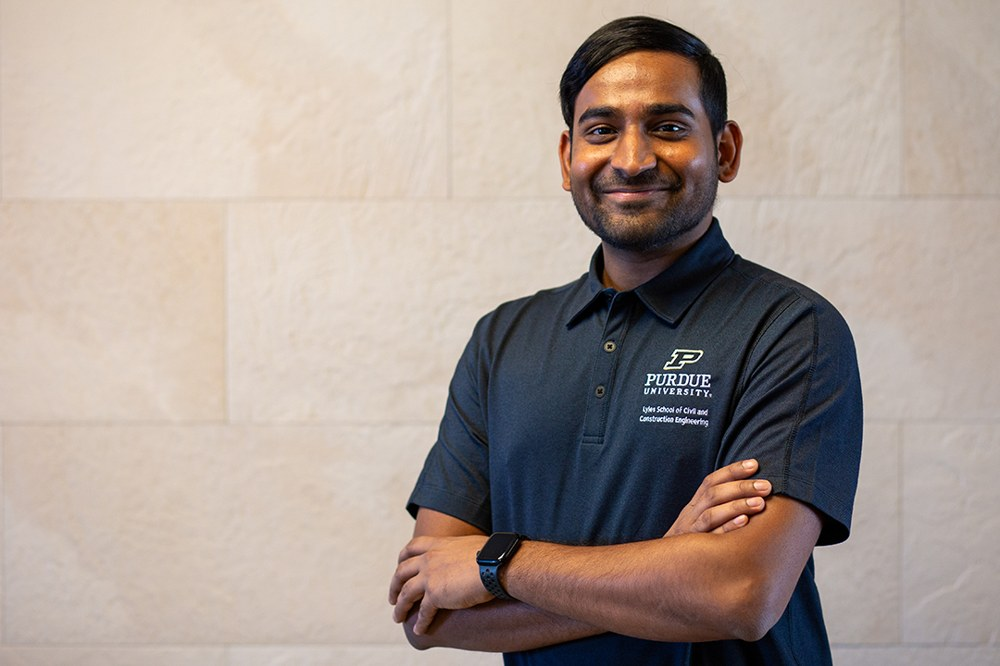

521
Citations
TRANSPORTATION RESEARCH ENGINEER · PURDUE UNIVERSITY · LICENSED P.E. (INDIANA)
Civil Infrastructure Systems & Connected Vehicle Data
I am a Transportation Research Engineer at Purdue University's Joint Transportation Research Program (JTRP) and a licensed Professional Engineer (P.E.) in Indiana. My research focuses on turning high-frequency connected vehicle trajectory streams, commercial truck telematics, and roadway sensing data into operational performance measures that enhance highway mobility, work zone safety, and infrastructure reliability.

My engineering research investigates how large-scale, heterogeneous vehicle sensor data can solve pressing operational challenges in transportation systems. By combining traffic flow theory, surrogate safety physics, and scalable cloud computing pipelines, my work translates billions of trajectory waypoints into actionable measures used daily by state DOTs and transportation agencies.
Over more than 20 funded research projects totaling over $6.0M, I have served as Co-Principal Investigator (Co-PI) on four active Indiana Department of Transportation (INDOT) research grants ($1.13M) and as lead research engineer on multi-state FHWA Pooled-Fund studies. These methodologies support statewide bottleneck screening, winter storm recovery, automated work zone queue warning, and capital project prioritization.
Framework mapping connected vehicle trajectory metrics directly to the FHWA Rule on Work Zone Safety and Mobility.
Empirical trajectory analysis of variable speed limits and ramp metering on the I-465 beltway.
506-page reference monograph establishing national standards for multi-state spatiotemporal speed heatmaps.
Research on connected vehicle traffic data and road congestion dynamics featured on the front page of The New York Times.